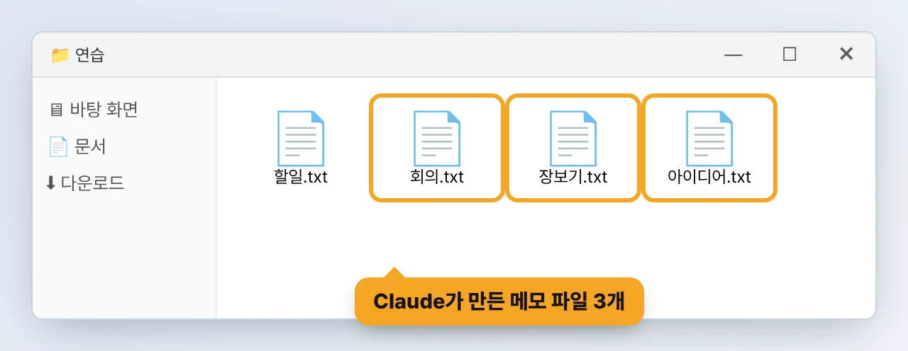
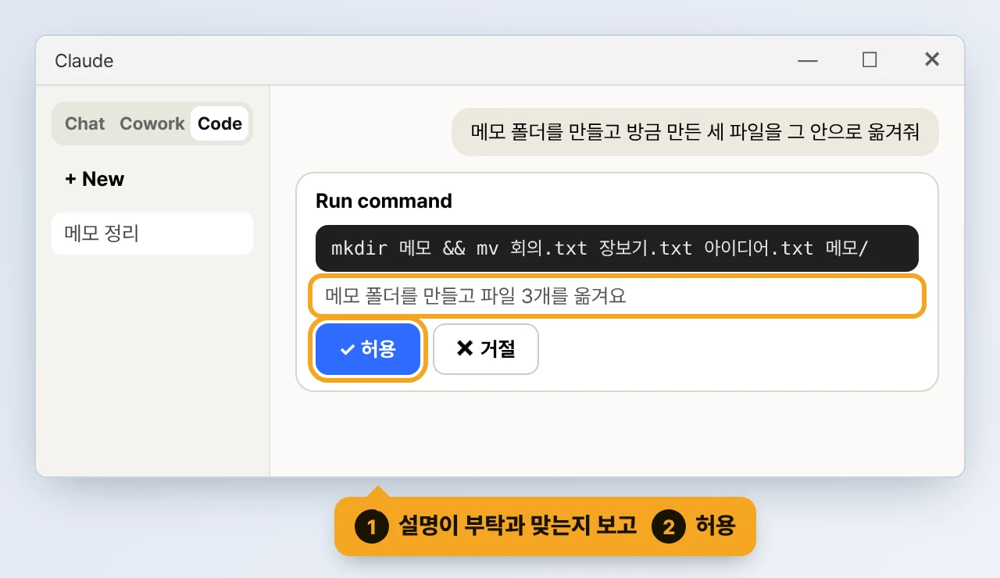
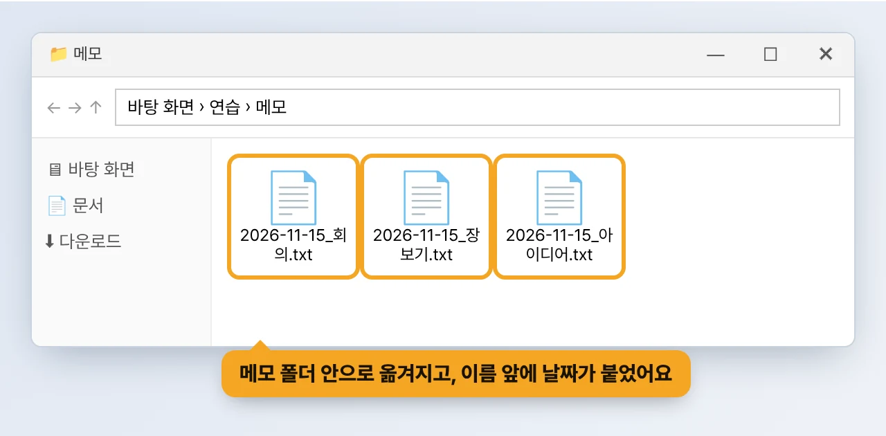
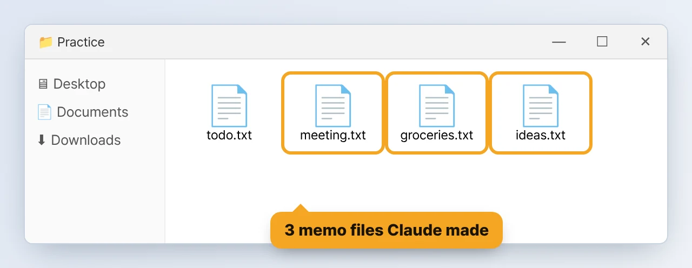
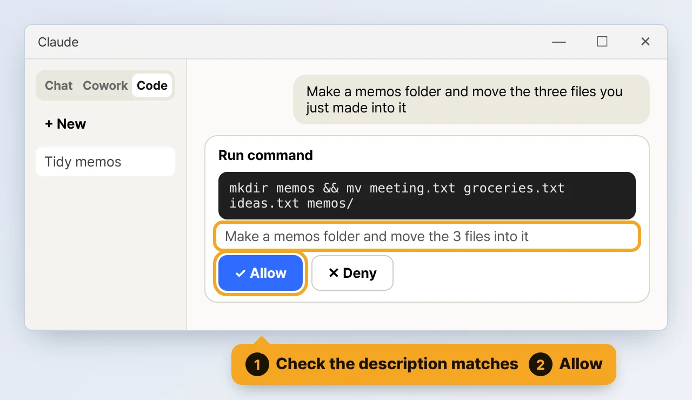
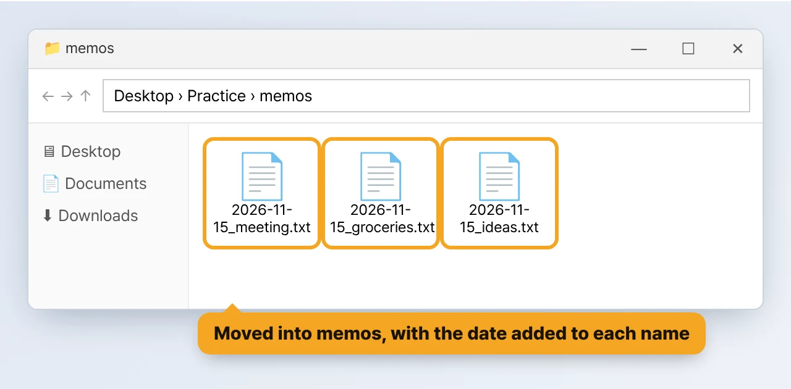

👆 이 내용은 버튼 따라 하는 실습으로도 있어요. 처음이라면 실습으로 직접 해 보고, 이 글은 복습할 때 보세요. 실습 시작하기 →
※ 글 속 그림은 따라 하기 쉽도록 그린 예시입니다. 실제 앱 화면과 모양·글자가 조금 다를 수 있어요.
오늘 새로 배우는 것
- 파일 여러 개를 한 번에 만들게 하기
- 폴더를 만들고, 파일을 옮기고, 이름을 바꾸게 하기
- 새로운 허락 카드 "명령을 실행해도 될까요?" 읽는 법
1. 새 대화로 시작하기
새로운 일이니 + New로 새 대화를 엽니다(3편에서 배운 것). 입력 칸 아래가 Local · 연습 · Manual인지 확인하세요. 오늘은 특히 Manual이 중요해요.
2. 메모 파일 3개 한 번에 만들기
회의.txt, 장보기.txt, 아이디어.txt 메모 파일 3개를 만들고 내용은 예시로 한두 줄씩 적어줘1편처럼 파일 만들기 허락 카드가 파일마다 한 번씩 나와요. 파일 이름을 확인하고 매번 허용.

먼저 알아 두기 — "명령"이 뭔가요?
지금까지 Claude는 파일의 내용을 만들고 고쳤어요. 폴더를 만들거나 파일을 옮기는 일은 조금 달라요. Claude가 컴퓨터에게 짧은 영어 지시문(명령)을 내려서 처리해요. 그래서 명령을 실행해도 될까요?라는 다른 모양의 허락 카드가 나와요.
| 명령 | 뜻 |
|---|---|
mkdir | 폴더 만들기 |
mv | 옮기기·이름 바꾸기 |
3. 폴더를 만들고 파일 옮기기
메모 폴더를 만들고 방금 만든 세 파일을 그 안으로 옮겨줘
4. "명령을 실행해도 될까요?" 카드 읽는 법
| 보이는 것 | 뜻 |
|---|---|
| 맨 위 제목 | 명령 실행(Run command, Bash 등)을 허락해 달라는 카드 |
| 검은 칸의 영어 | 실제로 실행할 명령 |
| 그 아래 설명 | Claude가 적은 무엇을 하려는지. 여기를 읽으세요 |
| 허용 / 거절 | 실행하기 / 하지 않기 |
영어 명령을 몰라도 괜찮아요. 설명이 내가 부탁한 내용과 맞는지만 보면 돼요. 맞으면 허용. 명령이 여러 개면 여러 번 물을 수 있어요.
명령 모양은 컴퓨터마다 달라요. Windows에서는 New-Item, Move-Item처럼 보이기도 해요.
rm, del, Remove-Item은 지우는 명령이에요. 지우라고 하지 않았는데 보이면 거절하세요. '항상 허용(Always allow)' 같은 버튼이 보여도 지금은 누르지 마세요.5. 파일 이름 한꺼번에 바꾸기
메모 폴더 안 파일 이름 앞에 오늘 날짜를 붙여줘. 예) 2026-11-23_회의.txt다시 명령 실행 허락 카드가 나와요. 설명을 읽고 맞으면 허용. 날짜는 실제 오늘 날짜로 붙어요.
6. 결과 눈으로 확인하기
연습 폴더를 열면 메모 폴더가 생겨 있어요. 두 번 눌러 열어 보세요.

파일 3개가 들어 있고, 이름 앞에 날짜가 붙어 있으면 성공이에요. 손으로 하나씩 옮기고 고쳐야 했을 일을 말 몇 마디로 끝냈어요.
잘 안 될 때
| 이런 경우 | 이렇게 하세요 |
|---|---|
| 허락을 안 묻고 바로 옮겼어요 | 허락 방식이 Manual이 아니에요. Accept edits는 폴더 만들기·옮기기 같은 흔한 파일 명령을 묻지 않아요. Manual로 바꾸세요. |
| 허락을 여러 번 물어요 | 정상이에요. 파일이나 명령마다 한 번씩 물어요. |
| 지우는 명령(rm, del…)이 보여요 | 지우라고 하지 않았다면 거절하고, 원하는 것을 다시 말해 주세요. |
| 잘못 옮기거나 이름이 이상해졌어요 | "방금 한 거 원래대로 되돌려줘"라고 말하세요. 이때도 허락 카드를 읽고 눌러요. |
오늘 배운 것
- 여러 파일도 한 문장으로 한꺼번에 만들고, 옮기고, 이름을 바꿀 수 있다.
- 폴더 만들기·옮기기·이름 바꾸기는 명령 실행 허락 카드로 묻는다.
- 명령을 몰라도 설명을 읽으면 된다. 지우는 명령은 특히 조심한다.
다음 글에서는 매번 묻는 허락 방식(모드)을 바꾸는 법과, 언제 바꿔도 안전한지를 배웁니다.
※ The pictures in this guide are illustrations to make it easy to follow. The real app may look a little different or use different words.
What you'll learn today
- Have it make several files at once
- Have it make a folder, then move and rename files
- How to read a new permission card: "May I run this command?"
1. Start with a new chat
It's a new job, so open a new chat with + New (you learned this in guide 3). Check that the buttons under the typing box show Local · Practice · Manual. Manual matters especially today.
2. Make 3 memo files at once
Create 3 memo files, meeting.txt, groceries.txt and ideas.txt, with a line or two of example text in eachAs in guide 1, a create-file permission card appears once per file. Check each file name and click Allow each time.

First, what's a "command"?
So far Claude has created and edited the contents of files. Making folders and moving files works a little differently: Claude gives your computer a short instruction in English (a command). So a different permission card appears: May I run this command?
| Command | Meaning |
|---|---|
mkdir | make a folder |
mv | move or rename |
3. Make a folder and move the files
Make a memos folder and move the three files you just made into it
4. How to read the "May I run this command?" card
| What you see | Meaning |
|---|---|
| Title at the top | A card asking to run a command (Run command, Bash, etc.) |
| English in the dark box | The actual command it will run |
| Description below | What Claude says it's going to do. Read this part |
| Allow / Deny | Run it / don't |
You don't need to understand the command. Just check that the description matches what you asked, then click Allow. With several commands it may ask several times.
Commands look different on different computers. On Windows you may see New-Item or Move-Item.
rm, del and Remove-Item are commands that delete. If you didn't ask to delete anything, click Deny. Even if you see a button like 'Always allow', don't click it for now.5. Rename all the files at once
Add today's date to the front of the file names in the memos folder, e.g. 2026-11-23_meeting.txtThe run-command card appears again. Read the description and click Allow if it matches. The real date today is used.
6. Check the result yourself
Open the Practice folder and you'll see a new memos folder. Double-click it.

If the 3 files are inside with the date in front of their names, it worked. A job that would have meant moving and renaming files one by one took just a few sentences.
If something goes wrong
| If this happens | Do this |
|---|---|
| It moved the files without asking | The permission mode isn't Manual. Accept edits doesn't ask for common file commands like making folders and moving files. Switch to Manual. |
| It asks many times | That's normal. It asks once per file or command. |
| I see a delete command (rm, del…) | If you didn't ask to delete anything, click Deny and say what you want again. |
| Something moved to the wrong place or got an odd name | Say "Undo what you just did." Read the permission card then too. |
What you learned today
- Several files can be created, moved and renamed with a single sentence.
- Making folders, moving and renaming ask through a run-command permission card.
- You don't need to know the commands; read the description. Be extra careful with delete commands.
In the next guide you'll learn to change the permission mode that asks every time, and when it's safe to do so.